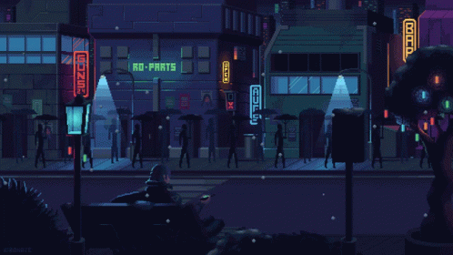

Mistérios da Mansão Esquecida

Após decifrar as runas na porta, você se vê imerso em uma luz branca brilhante, que o transporta para fora do tempo e do espaço. Flutuando através do vazio, uma sensação de paz e calma o envolve até que, como num piscar de olhos, você se vê despertando em sua própria cama, em sua casa. Confuso e atordoado, você contempla a experiência surreal, enquanto as memórias da mansão e suas provações ainda ecoam em sua mente.